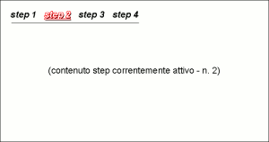

Il WizardPanel è un pannello utilizzato realizzare strutture organizzate a wizard: Prevede due sezioni visibili:
| cod. | nome | descrizione |
|---|---|---|
| apparenza grafica | ||
| PWIZ002 | visualizzazione step corrente | Visualizza uno solo dei pannelli "inclusi" (lo step corrente) |
| PWIZ006 | navigatore step | Nella parte superiore del wizard panel è presente una sezione di naviagazione degli step. |
| dinamica di interazione | ||
| PWIZ003 | step attivo persistente | Lo stato del pannello (ovvero l'informazione circa lo step correntemente "attivo") è mantenuta durante la sessione utente |
| PWIZ004 | attivazione step comandabile | E' possibile comandare da logica applicativa l'attivazione di uno degli step contenuti nel WizardPanel |
| PWIZ005 | attivazione manuale step | E' possibile comandare l'attivazione del singolo step mediante la pressione della "linguetta" corrispondente alo step desiderato |
| PWIZ007 | logica su selezione step | E' possibile associare all'evento di selezione di uno step l'esecuzione di una logica applicativa |
| PTAB008 | passaggio allo step condizionato | A fronte dell'esito della logica associata alla selezione di uno step è possibile eseguire o meno l'effettivo passaggio allo step selezionato |
| PTAB009 | active step awareness | L'informazione di quale sia lo step correntemente selezionato è a disposizione della logica applicativa |
| struttura | ||
| PWIZ001 | struttura singolo step | La struttura di ciascuno step è determinata da un pannello che può essere dei seguenti tipi:
|
|  |
| Esempio di wizard panel |
Nella tabella seguente è riportato il grado di implementazione delle varie caratteristiche/funzioni dell'elemento WizardPanel nelle differenti implementazioni.
| cod | feature | guigen | |||
|---|---|---|---|---|---|
| 1.5.0 | 1.6.0 | ||||
| neutral-base | neutral-arricchita | neutral-base | neutral-arricchita | ||
| apparenza grafica | |||||
| PWIZ002 | visualizzazione step corrente |  |
|
|
|
| PWIZ006 | navigatore step | |
|
|
|
| dinamica di interazione | |||||
| PWIZ003 | step attivo persistente | |
|
|
|
| PWIZ004 | attivazione step comandabile | |
|
|
|
| PWIZ005 | attivazione manuale step | |
|
|
|
| PWIZ007 | logica su selezione step | |
|
|
|
| PTAB008 | passaggio allo step condizionato | |
|
|
|
| PTAB009 | active step awareness | |
|
|
|
| struttura | |||||
| PWIZ001 | struttura singolo step | |
|
|
|